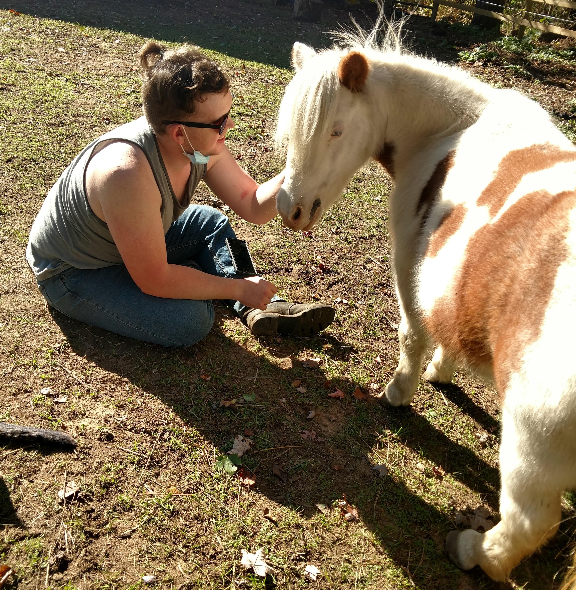

Providers
Matt
LLP, PA-C, DHA
Matthew Stack has a Master's degree in clinical psychology, a Masters in Physician Assistant studies and a Doctorate in Health Administration. Matthew worked as a limited licensed psychologist in Michigan for 15 years providing individual, couple, family and group psychotherapy. In 2000, Matthew went back to school and became licensed as a physician assistant. After PA school, Matt, Sue and their family served on the Navajo Indian Reservation in Northern Arizona for 5 years. While Matthew has broad experience working as a family practice PA, his background in psychology made working as a psychiatric PA a natural fit and Matthew has worked extensively with collaborative psychiatrist colleagues. Due to his dual licensure, Matthew is able to provide both innovative psychotherapies as well as psychiatric medication management.
Sue
Sue has a bachelor's degree in physical education and community recreation. Sue has worked for many years in our communities helping children and families find expression and joy through athletics, dance, recreation and outdoor activities. More recently Sue has been exploring the healing influence of hanging out with our equine friends. She has taken numerous trainings in equine assisted therapeutic recreation. Sue has learned that due to their instinctual grounding, intuitive awareness of their environment, and desire for connection, horses can be a wonderful therapeutic ally.

Astrid
Because horses have long been domesticated and live alongside humans, it's thought that they are especially attuned to humans' emotions and nonverbal signals and that they respond accordingly. While engaging in activities with the horse, the client will attempt to recognize how the horse's behaviors might be due to their own emotional signals—a client who is angry or anxious, for example, may see the horse pull away or otherwise respond negatively. This “mirroring” process is thought to help the client identify what they're feeling and potentially modify their emotions for the better, all in a nonjudgmental environment. Equine specialists may also promote the practice of mindfulness, or focusing on the present moment, when the client is interacting with the horse.
Rosie
Because horses are large, powerful, and may be intimidating to many people, engaging with them in a supervised environment is thought to help anxious individuals face their fears and practice vulnerability in a safe space. Indeed, some clients report that simply interacting with the horses and successfully guiding them through challenges is beneficial for their anxiety and self-esteem. Over time, many clients form a bond with the horse(s) they work with, which is theorized to foster empathy and build trust, especially among clients who have been traumatized in some way. What's more, learning to interact with a horse calmly and safely is thought to help individuals, particularly children, who struggle with impulse control or hyperactivity.